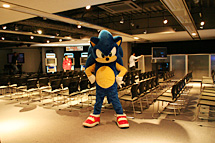
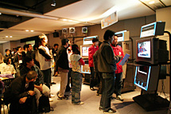
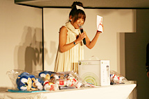

2006年12月3日（日）「ソニック・ザ・ヘッジホッグ」15周年記念イベントが
エンターブレインのイベントスペース「WinPa」にて行なわれました。
会場には、抽選で選ばれたソニックファン100名が集結し、
ゲーム大会、トークセッション、ソニック○×クイズなどを楽しみました。
ソニック生みの親とも言える中 裕司の、今だから話せるソニックのマル秘（？）情報が聞けたり、
ゲーム大会の景品には豪華景品も登場し、会場は大いに盛り上がりました。
そんなソニック15周年記念イベントの様子をレポートします！
-
会場の準備完了！
あとはお客様を待つばかりです。
-
フリープレイコーナー。
最新作のゲームを始め、
昔のハードのソニックタイトルも設置されました。
-
ソニックグッズのショーケースも飾られました。
 溢れんばかりのソニックグッズ！
溢れんばかりのソニックグッズ！-
スタンバイ中のソニック。
打ち合わせにも余念がありません。
- 
スタンバイOK！
入り口でみなさんを待ち受けます！
-
入場されてきたお客様と
コミュニケーションをとるソニック。
女性受けが良かったようです。
-
フリープレイコーナーでは、
新世代ゲーム機Wii対応の
『ソニックと秘密のリング』が
注目を浴びていました！
-
懐かしのソニックタイトルも。
-
モチロン『SONIC THE HEDGEHOG』も大人気でした！
-
今か今かと開始を待ちわびる招待客のみなさん。
-
ゲーム大会の予選が開始！
上位3名には豪華賞品が用意されています！
- 
『SONIC THE HEDGEHOG』のミニゲームを
みなさんに1プレイずつしていただきました。
チャンスは全員に！！
-
ソニックも挑戦しました！
意外？！なかなかの好タイム！
-
イベント会場ではお馴染みのソニック君も！
-
ファミ通PS2編集長の相沢さんの司会進行でトークセッションが開始されました。
-
笑いを交えながら、
ソニックに関する軽快なトークが
繰り広げられました。
-
ソニック1の音楽は
DREAMS COME TRUEの中村氏に依頼。
当時の状況について中 裕司が語ります。
-
新作『SONIC THE HEDGEHOG』では、
DREAMS COME TRUEに
エンディングソングを依頼しました。
そのときの模様を話す雲野プロデューサー。
-
次世代ソニックについて語る中村ディレクター。
- 
ゲーム大会の賞品の発表！
豪華賞品のラインナップに、
みなさんの期待も高まります！
-
予選大会の上位4名によって、
決勝戦が行なわれます。
決勝戦のゲーム内容、
ルール説明をする雲野プロデューサー。
みなさんの表情も真剣です。
-
決勝戦！！
みなさんも応援してくれ、
会場が一つになったような感覚になりました。
 どちらが勝つかわからない！
どちらが勝つかわからない！
抜きつ抜かれつ、かなりな接戦になりました！
ラストは大盛り上がり！！
会場から歓声が上がりました！
-
3位、4位はＴシャツやぬいぐるみのソニックグッズ。
2位はそれプラス
『SONIC THE HEDGEHOG』のゲームソフト！
1位はさらにそれに加えて、
XBOX360が贈られました！
-
続いては、ソニッククイズ大会！
またまた豪華景品が並びました！
-
○×クイズ！
最初の問題は、
「ソニックの誕生日は6月23日である。
○か×か？！」
全員○に移動しました！
さすが選ばれしソニックファンの方々。余裕です！
-
その後どんどん人数が絞られてきます。
-
最後の2人は、壇上で○×クイズ！
なかなか難しい問題でもがんばってくれました！
-
中 裕司も登場し、一緒になって答えていました！
-
最後はソニックと一緒に！
みなさんありがとうございました！
-
お別れに、みなさんにセガの袋が配られました。
中身はなんだろう…？
-
おおっ！ソニックグッズが盛りだくさん！！
-
「15年間ありがとう！
これからもヨロシク！！」
のメッセージと共に、
『SONIC THE HEDGEHOG』の
図書カードも入っていました！
みなさんありがとうございました！